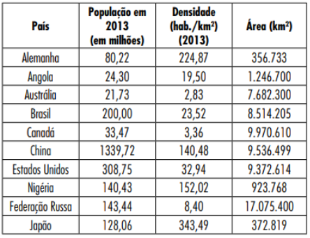

📒 Cronograma de Tarefas da Sala 1!
Oficina: Conversando com IA
📝 Próximas Tarefas:
📕 Tarefas |
|---|
🪨FILOSOFIA:📆 31/10/2023 Trabalho de FILOSOFIA📒Digitado, (75 pontos)Instruções:1- Olá, pessoal! Conforme combinado estou estou agendando a entrega do trabalho de filosofia. No arquivo anexo vocês encontram as questões e os textos. Mas lembrem-se que vocês já receberam na aula do dia 26/09 os textos de Nietzsche de modo impresso. No dia 03/10 vou entregar o texto do Sartre. De qualquer modo a versão digital dos textos estão no final do arquivo.2- Também vou deixar alguns vídeos no canal de filosofia sobre o assunto, vocês podem assistir para complementar os estudos.3- Qualquer dúvida a professora estará a disposição no teams.~ Profª Bianca📄Baixar o Trabalho:🏙️SOCIOLOGIA:📆 31/10/2023 Pergunta de SOCIOLOGIA📒Manuscrito, no caderno.1- Porque para Nietzs, Sócrates é um doente?📖HISTÓRIA:📆 06/11/2023 Pergunta de História📒Manuscrito, no caderno.1- Em que medida o Tratado de Versalhes contribuiu para a instabilidade política, econômica e social no período Pós-Guerra?🏙️SOCIOLOGIA:📆 07/11/2023 Estudo Dirigido de Sociologia📒Digitado (75 pontos)✅Orientações:- O trabalho deve ser produzido em Word.- As respostas devem estar de acordo com o que é solicitado. Evite fugir do tema.- Cópias da internet serão ZERADAS.- Para responder as questões 1,2,3,4,5 e 6, é necessário assistir o documentário “Milton Santos - Por uma outra globalização - Editado para fins didáticos” (Assista o vídeo!)📄Baixar a Tarefa:🔬BIOLOGIA:📆 09/11/2023 Pesquisa preliminar de Biologia📒Manuscrita (100 pontos)📄 Baixar a Pesquisa:📔 Perguntas:
1. Quais são as funções do tecido epitelial?2. Quais são as características do tecido epitelial?3. Comente sobre as especializações da superfície livre das células epiteliais.4. Comente e esquematize as células dos tecidos de revestimento quanto ao número de camadas, formato celular, presença de especializações; e tecido epitelial glandular (endócrina e exócrina).5. Comente sobre as glândulas anfícrinas.6. Comente sobre as características e funções do tecido conjuntivo.7. Comente sobre:Tecido Conjuntivo Propriamente DitoTecido Conjuntivo Especial8. Comente sobre as características e funções do tecido nervoso e muscular.9. Comente sobre os órgãos dos sentidos.10. Esquematize os sistemas abaixo, bem como sua função:✏️ Critérios de Referências
⚠️Seguir este modelo de referências, para não perder nota!🗺️GEOGRAFIA:📆 10/11/2023 VISTO NO CADERNO DE GEOGRAFIA📒 Individual🔍PERGUNTAS QUE DEVE TER EM SEU CADERNO:1- LISTA DE EXERCÍCIO!Questão 01.A Santa Sé, que fica dentro da cidade de Roma e tem como chefe de Estado o Papa Francisco, tem cerca de 1.000 habitantes, que vivem em apenas 0,44 km². E ele não é apenas o menor e menos populoso: é um dos menos povoados. Qual é sua densidade populacional?Questão 02.Em uma cidade, onde habitam 200 mil pessoas, houve em um ano uma incidência de 2750 nascimentos, além de 1830 óbitos. Calcule as taxas de natalidade, mortalidade e crescimento vegetativo.Questão 03.Em uma cidade, onde habitam 100 mil pessoas, houve em um ano 1560 nascimentos, além de 1300 óbitos. Calcule as taxas de natalidade, mortalidade e crescimento vegetativo.Questão 04.Uma cidade possui 1000 habitantes, e em um ano houve 30 nascimentos e 13 falecimentos, determine o crescimento vegetativo.Questão 05.Calcule o crescimento vegetativo de uma cidade que registrou em 2009 uma Tn (taxa de natalidade) de 58 ‰ e uma Tm (taxa de mortalidade) de 13 ‰.Questão 06.Cerca de 20.000.000 de brasileiros vivem na região coberta pela caatinga, em quase 800.000 km² de área. Quando não chove, o homem do sertão e sua família precisam caminhar quilômetros em busca da água dos açudes. A irregularidade climática é um dos fatores que mais interferem na vida do sertanejo. Segundo esse levantamento, a densidade demográfica da região coberta pela caatinga, em habitantes por km², é de:Questão 07.Cite os números da população absoluta e população relativa do Brasil.Questão 08.População total do país: 1.300.000 habitantes, houve nascimentos em um ano de 10.000 determine a Taxa de natalidade:Questão 09.Considerando a tabela, faça uma lista, em ordem crescente, dos países populosos e dos países povoados.

×
2- PIRÂMIDE ETÁRIA DA ÍNDIA DE GEOGRAFIA✅ Critérios: A postura desenvoltura durante a organização do material será avaliada. Qualidade da apresentação do trabalho final e materiais pesquisados será avaliada. Realizar as atividades de forma adequada. Demonstrar interesse e compromisso pelo trabalho; ter uma participação ativa.🔍Objetivo:O trabalho sobre pirâmide etária, busca proporcionar aos alunos condições de desenvolver a sua capacidade de interpretação de gráfico para possibilitar que os discentes compreendam e relacionem a estrutura etária da população e análise crítica das distintas tipos de pirâmides dos países.📄Baixar a Tarefa: |